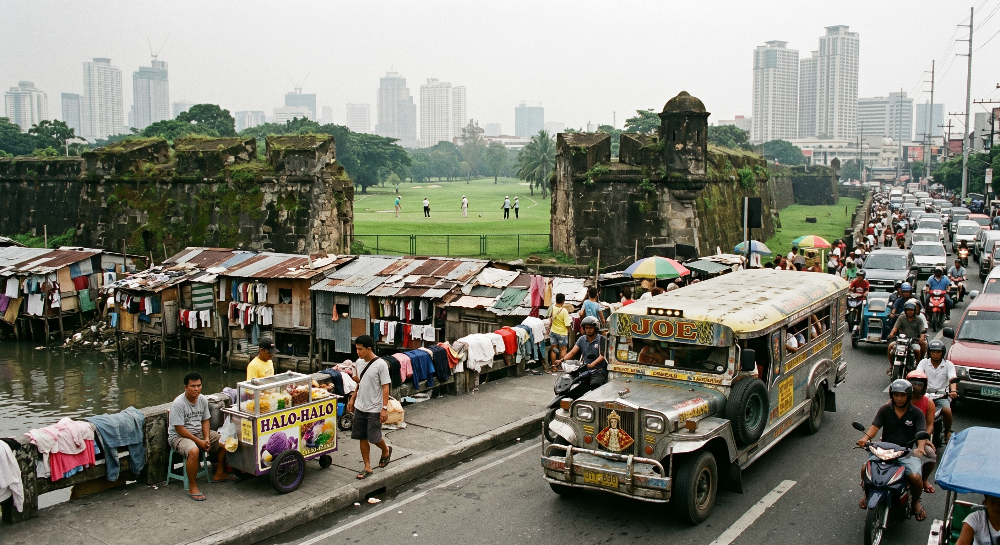

Life in Manila
Originally written June 2010 • Uploaded to Facebook on Jun 24, 2010, 9:02 AM

Yes, I must say Manila is an ugly place. It feels significantly grittier than anywhere else I have ever laid eyes on—well, perhaps with the singular exception of Old Delhi. Life in Manila operates on a volatile pendulum swinging between agonizingly slow and frantically fast, dictated almost entirely by whether the nearest air conditioning unit happens to be functional or not. My baseline impressions were likely a bit skewed because I spent my opening days tucked deep into one of the dense districts of Metro Manila. It seems that remarkably few locals actually know where Manila proper begins or ends; everyone invokes its name, but no one can pinpoint its geographic center on a map. Manila: overcrowded, pungent, heavily polluted, an urban layout spanning both hyper-velocity and absolute gridlock, all bisected by the heavy waters of the Pasig River.
The metropolis fuses so many highly contrasting cultures and fragmented attempts at Western modernization that it feels uncannily like Mexico City. Walking the lanes, a strange part of my brain insists that I am entirely at home, but absolutely no one else shares that sentiment—especially since everywhere I step, I am casually addressed as "Joe." It is a moniker that doesn't just make me cringe the moment it strikes my ears; it also forces me to remember my early days in Mexico, where I was similarly destined never to be fully recognized as "one of them."
Manila holds an array of conflicting dimensions. Just the other afternoon, I faced the classic bureaucratic frustration of being abruptly turned away from the grand National Post Office (which is apparently the sole processing terminal of its scale in the country), only to be warmly welcomed moments later at the Vietnamese Embassy. The embassy sits tucked away safely inside a sector crowded with street beggars, low-tier dive bars, and the crumbling remnants of what once was. In fact, I am convinced that Manila is ultimately just a vast collection of "what once was"—a living graveyard of the divergent historical eras, foreign conquerors, and autocratic dictators that have dictated the country’s trajectory over centuries.
I have been incredibly fortunate to spend consecutive days bunking with my friend's family—surrounded by eight "cousins, uncles, and aunts"—but when I lie down to sleep at night, reality checks my perspective. Packing eight human beings and three dogs into a single six-by-six meter apartment is far from any traditional standard of luxury, particularly when the solitary electric fan aimed directly at your face blows air that feels significantly warmer than your own body temperature.
Yet, the city remains packed with fascinating spectacles. Today, I navigated past an entertainment park called Star City, spotting it from a distance due to a massive, strangely configured white artificial tree near the gate that clashes dramatically with its more conservative, gray surroundings. I didn't venture inside because the gates were closed, choosing instead to settle down on the curb to enjoy a refreshing glass of *Halo-Halo*. The dessert functions almost like an eclectic parfait, packing whatever sweet ingredients happen to be within arms' reach over crushed ice, anchored by a vibrant purple scoop of *ube* that tastes remarkably like sweet potato.
Continuing my walk through the sector, I stumbled upon more bizarre monuments to past glory. A massive structure disguised as an ocean vessel, heavily adorned with ornate Chinese temple decorations, had been entirely overtaken by an army of urban squatters and an aroma that made me physically flinch. Further down the coast, I discovered other surreal architectural specimens—including a massive, abandoned Folk Arts Theater surrounded entirely by Chinese restaurants. On one side of the bay, a long pier extended far out into the water, granting me a brief, sweeping glimpse of coastal Manila, which was acceptably pretty from a distance. But as my boots traced the concrete path toward the open water, I noticed that the furthest end of the pier had completely crumbled directly into the sea, inhabited only by a few makeshift shacks and more heavy smells.
Before hitting the literal drop-off of the broken pier, I was startled to encounter a parked van of policemen. Every single officer was outfitted with heavy, military-grade machine guns, completely unbothered by the surroundings as they quietly enjoyed a dinner of fresh fish cooked on a tactical camp stove. The catch had clearly been bartered directly from the artisanal fishermen line-fishing right off the edge of the dock. I walked further inland and uncovered a go-kart track, a paintball arena, and a pristine, modern convention center. It was surprisingly peaceful right along the maritime docks, but the moment I stepped back toward "civilization," I was instantly slapped by the deafening roar of urban traffic.
Why does the traffic layout suck so profoundly here? The blame falls squarely upon hundreds of battered, historic trucks locally called *Jeepneys*. Most are crudely outfitted with a custom steel body shell, two long parallel benches, and a driver squeezed into a microscopic, suffocating nook flanked by one or two laminated religious icons. While a select few are heavily detailed with brilliant chrome and look exceptionally cool, the vast majority are just dented, smoke-belching steel bricks. These jeepneys zoom aggressively through the gridlock they inevitably create, slamming on their brakes to harvest passengers anywhere they please. The avenues are a chaotic soup of cars, massive buses, delivery bicycles, and swarms of motorcycles all attempting to go places, but progress is impossible; traffic signals are treated as loose suggestions open to wild personal interpretation, and vehicles flat-out refuse to grant pedestrians an ounce of respect on the crosswalks.
The city has attempted to implement faster rapid transit via the elevated MRT and LRT train lines, but these carriages become so densely packed during peak hours that it is practically impossible to physically exit or enter the doors at rush hour. At least the train cars are air-conditioned.
There are countless more traces of a grand colonial past scattered across the grid, but these days, what holds the country back from modernizing is a toxic blend of political volatility and institutional corruption. According to local accounts, a mere six elite oligarchic families control the vast majority of the true positions of power across the state. It is entirely common to watch a politician systematically pull their immediate kin directly into office. A prime example sits right at the top: the current president, Noynoy Aquino, is the son of the revered political martyrs and former leaders of the country. I recognize that we have endured the exact same dynastic legacy in America with the Bush family, but in the Philippines, nearly every regular person I meet expresses a genuine sense of relief if they can claim a personal connection to a local mayor or a regional politician, relying on nepotism simply to feel structurally "protected."
There are genuinely beautiful historic monuments to see in Manila, but they are almost universally overshadowed by extreme poverty or total administrative neglect. Take the historic district of *Intramuros*, where the architectural heart of old Spanish Manila still stands. Ancient stone churches, massive colonial estates, and towering fortifications rise out of a neighborhood that feels straight out of the 19th century. Yet, as I traced the perimeter of the ancient walls built by the Spaniards, I encountered a luxury golf course skirting the historic fort. Right outside the manicured grass of the country club, vast slums and street beggars outnumber the affluent golfers by at least a thousand to one.
As I continue to map this noisy, dusty city, I am constantly searching for rare glimpses of what will ultimately become of the Philippines. My sincere hope is that the country won't simply settle for becoming the global corporate call-center mecca it already is, but will instead emerge as a proud, beautiful nation that cherishes its deep, historical bond with the sea—welcoming travelers like myself who have journeyed across the world to discover exactly what the Philippines is all about.